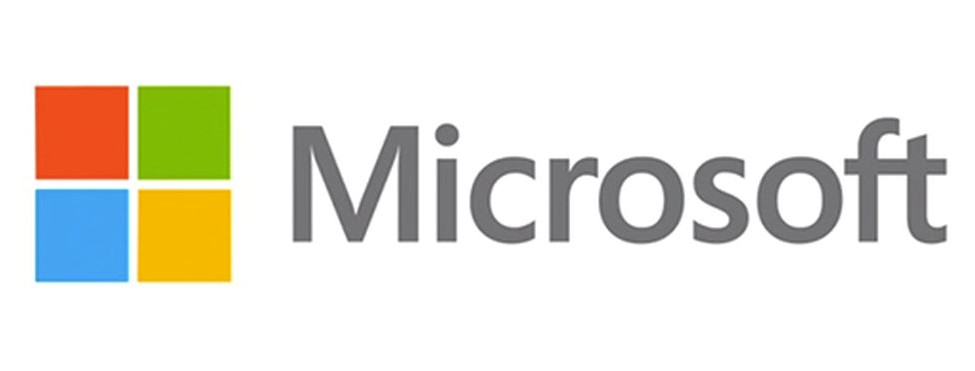

Microsoft 
Software Engineering Intern
Bellevue, WA (Remote)
- Migrated code from .NET Framework to .NET Core to improve availability and efficiency to 99.9%
- Adjusted functions to achieve 99% functional parity
- Resolved and documented issues from dependency changes to assist other teams that intended to migrate code
Explore Intern
Bellevue, WA (Remote)
- Conducted user interviews to understand the impact of recurring update emails and analyzed results using the RICE framework to prioritize solutions for user pain points
- Created a spec that iterated through various versions/milestones
- Developed base logic to identify and flag possible recurring emails
- Explored ML clustering algorithms for future iterations of identifying emails
Shaw Communications
Digital Operations Analyst
Calgary, AB
- Redirected over 1000 URLs using Akamai Edge to support migration to a new host and automated error troubleshooting by developing a Python script
- Redesigned UI for the Digital Health team's internal health checks using C# and SQL to decrease check time
- Learned about project management work cycle by attending meetings with PM lead to discuss solutions with various teams
- Resolved the 2nd most service tickets on the team with Splunk and internal tools to analyze customer issues
Engineering for Kids
Assistant Instructor
Saskatoon, SK
- Learned how to use Clickteam Fusion in under a week to teach students design and program their first video game
- Managed around 50 students aged 6-12 to create a constructive learning environment
- Answered students' questions to solidify their understanding of new engineering concepts